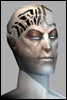

Last Thread Next Thread Last Thread Next Thread  |
| Author | Thread |
| spaztic Soleet  | |
 April 30th, 2002 17:23 April 30th, 2002 17:23 | #1 |
| DaveDread workworkworkwork  | |
| April 30th, 2002 19:42 | #2 |
| The saved copy (Funcom's forum archive, saved by the Wayback Machine in 2025) |
All times are GMT.
 |
    |
| Last Thread Next Thread |
| Author | Thread |
| spaztic Soleet | |
| April 30th, 2002 17:23 | #1 |
| DaveDread workworkworkwork  | |
| April 30th, 2002 19:42 | #2 |
| The saved copy (Funcom's forum archive, saved by the Wayback Machine in 2025) |
All times are GMT.